Nokia WIFI (TAS)¶
1. OBJETIVO¶
El presente documento buscar explicar y detallar el proceso que genera TAS.
2. ALCANCE¶
Áreas involucradas: Performance de Red
3. DEFINICIONES¶
- CORTADO: Servidor UNIX en donde se importan los archivos desde el proveedor. El nombre del servidor es cortado.claro.amx y la dirección IP física es 10.105.146.8
4. DESCRIPCION GENERAL¶
Tas es una entidad perteneciente a la red CORE de LTE que junto con otros elementos como el AAA, el CSCF y el iNUM componen lo que se llama el IMS (Subsistema Multimedia IP) y son elementos destinados a manejar información sobre el nuevo servicio que ofrece LTE de VOLTE (Voz sobre LTE). En Claro tenemos por el momento dos TAS, uno en Córdoba y otro en Torcuato. La integración en SMART se realiza mediante la lectura de archivos XML que provienen del servidor de Netact (NOKIA) y cuyos KPI se encuentran en NETACT Regional Cluster 6 y la web es https://rc6login.rc6.netact.claro.amx/startpage/.
5. MACRO FLUJO DEL PROCESO¶
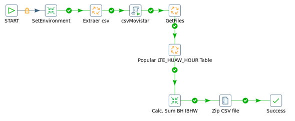6. DESCRIPCIÓN DETALLADA¶
6.1. Datos Origen¶
- Server Origen y Path: 10.105.39.140,
/d/oss/global/var/mediation/north/pm/export/YYYYMMDDHH/etlexpmx_TAS*
- Cantidad de archivos origen: 5 archivos con distintos contadores cada uno.
ETLEXPMX_TAS_YYYYMMDDHHMMSS_NÚMERO.xml.gz

- Frecuencia actualización: Frecuencia Horaria
- Tipo de Archivo: XML
6.2. Datos Destino¶
- Server Destino: Cortado
- Conversión de Archivos: NO
- Tabla Files: SI
- Tabla Auxiliar: NO
- Frecuencia de corrida del proceso: 1 vez por hora
- Regionales: Si
- RAW Si/No: Si
- Hour Si/No: Si
- Day Si/No: Si
- BH Si/No: Si
- ISABH Si/No: Si
- Países: Argentina
- Directorio Destino (File System): /calidad/NokiaWIFI
6.3. Shell Copiar Archivos Origen a Destino y limpieza de los mismos¶
- Scripts tienen las siguientes funciones:
- 1- Copiar los archivos 2- Limpieza 3- Ejecutar Pentaho
Los scripts son los siguientes: El Script NokiaWIFIEndToEnd.sh es la raíz del proceso.
Los Scrips a utilizar son: • NokiaWIFIEndToEnd.sh • runAll.sh • runNokiaWIFI.sh • runParserNokiaWIFI.sh • syncro_nokiawifi.sh • syncro_nokiawifi_object.sh • generarCsvAll.sh
6.4. Listado de Tablas Utilizadas¶
Las tablas utilizadas son las siguientes:
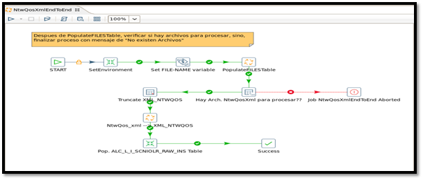
align: center 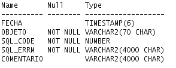
- TABLA LTE_C_NOKIA_TAS_HOUR
align: center
- TABLA LTE_C_NOKIA_TAS_DAY

align: center 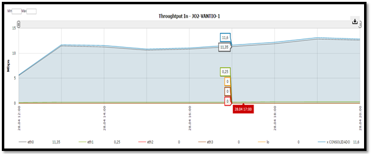
- TABLA LTE_C_NOKIA_TAS_BH
align: center
- TABLA LTE_C_NOKIA_TAS_IBHW

align: center
6.5. Pentaho¶

- Proceso Pentaho End to End
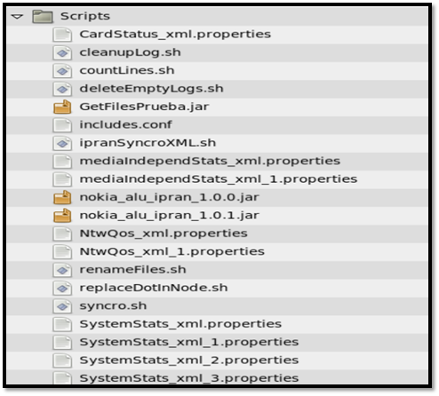
- Pentaho runParserNokiaWIFI

- Pentaho Get FileName & Populate Raw
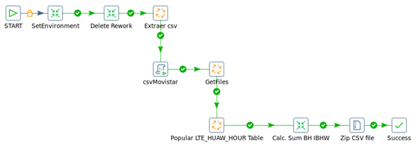
- Pentaho Update Table Files

- Pentaho Merge Table Hour

- Pentaho InsProcessToRunDAYBH

6.6. Controles
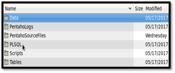
7. REPROCESO MANUAL¶
PROCESO DE REWORK END TO END
8. SMART¶
Los reportes en la herramienta Smart se muestran de la siguiente manera:
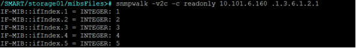 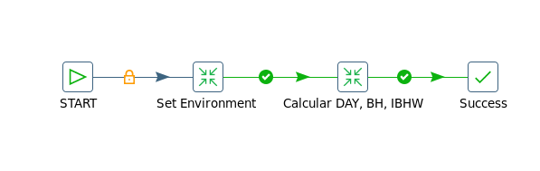
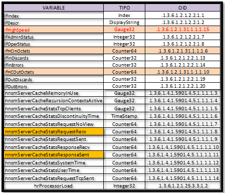
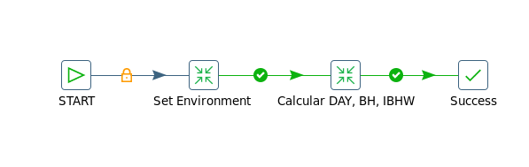
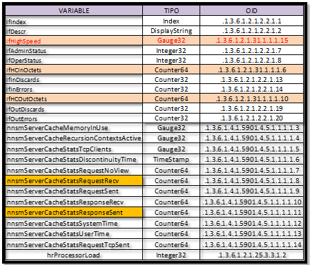

Nota: Los valores mostrados en SMART no deben presentar picos horarios de más del 50% de una hora respecto de la otra. En SMART se muestran todos los KPI que se pidieron analizar con su nombre correspondiente.
9. CONTROL DE CAMBIOS¶
| Fecha | Responsable | Ticket Jira | Detalle | Repositorio |
|---|---|---|---|---|
| 23/05/2017 | Franco Rinaldi | Creacion de documentación de Proyecto.
Proyecto actual - CORTADO. |
Servidor: CORTADO |